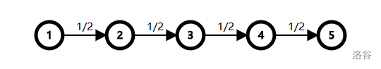
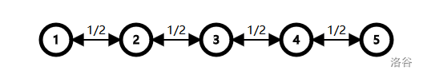
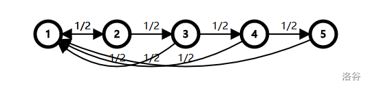
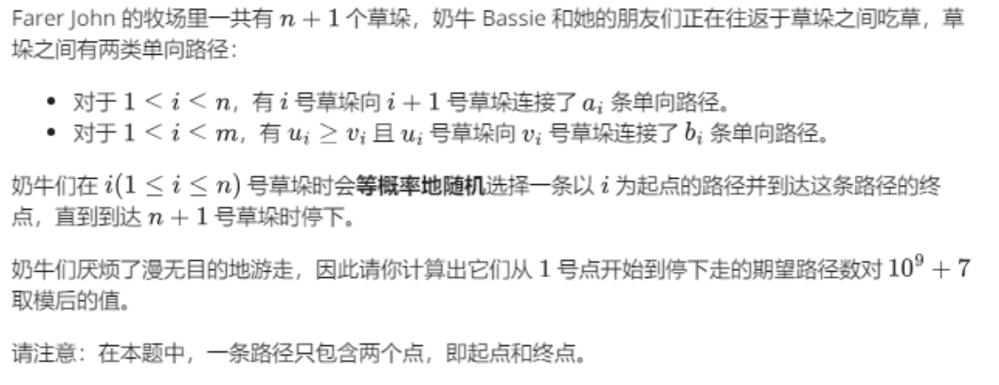

数学期望¶
摘抄 学习笔记 | 期望
期望通常和dp相结合，因此属于dp的一种。
【典例】DAG上抵达终点期望路径 | 绿豆蛙的归宿¶
题目背景
随着新版百度空间的上线，Blog 宠物绿豆蛙完成了它的使命，去寻找它新的归宿。
题目描述
给出张 \(n\) 个点 \(m\) 条边的有向无环图，起点为 \(1\)，终点为 \(n\)，每条边都有一个长度，并且从起点出发能够到达所有的点，所有的点也都能够到达终点。
绿豆蛙从起点出发，走向终点。 到达每一个顶点时，如果该节点有 \(k\) 条出边，绿豆蛙可以选择任意一条边离开该点，并且走向每条边的概率为 \(\frac{1}{k}\) 。现在绿豆蛙想知道，从起点走到终点的所经过的路径总长度期望是多少？
思路¶
我们首先设定期望状态，对于这种期望，我们无非只有两种情况。
-
定义f_{i}为从起点到达i的期望步数
-
定义f_i为从i抵达终点的期望步数。
那么我们首先看我们知道什么。如果我们选择下面那种定义，那么我们即知道f_n=0，此时我们的f_1就是答案。
那么我们现在就是要求出f_1。我们可以考虑倒过来dp，这样我们就知道了初始状态。
一般来说，初始状态确定时可用顺推，终止状态确定时可用逆推。
那么假设我们现在考虑点x，其可以转移到v，此时我们的v的状态假定是已知的，就有
\(f_x=\frac{1}{out_x}\times \sum_v(f_v+w_{x,v})\)
十分重要的一点是这个转移式满足可拆分性，这里需要进一步思考。
那么因为我们的dp是反着进行的，所以我们需要建立反向图，然后我们就需要进行拓扑排序，因为这是我们唯一可以想到很好遍历DAG的方法了。
并且拓扑排序还有一个性质，就是我们每一次都是沿着一条链遍历的。
代码¶
/*
Keyblinds Guide
###################
@Ntsc 2024
- Ctrl+Alt+G then P : Enter luogu problem details
- Ctrl+Alt+B : Run all cases in CPH
- ctrl+D : choose this and dump to the next
- ctrl+Shift+L : choose all like this
- ctrl+K then ctrl+W: close all
- Alt+la/ra : move mouse to pre/nxt pos'
*/
#include <bits/stdc++.h>
#include <queue>
using namespace std;
#define rep(i, l, r) for (int i = l, END##i = r; i <= END##i; ++i)
#define per(i, r, l) for (int i = r, END##i = l; i >= END##i; --i)
#define pb push_back
#define mp make_pair
#define int long long
#define pii pair<int, int>
#define ps second
#define pf first
// #define innt int
// #define inr int
// #define mian main
// #define iont int
#define rd read()
int read(){
int xx = 0, ff = 1;
char ch = getchar();
while (ch < '0' || ch > '9') {
if (ch == '-')
ff = -1;
ch = getchar();
}
while (ch >= '0' && ch <= '9')
xx = xx * 10 + (ch - '0'), ch = getchar();
return xx * ff;
}
void write(int out) {
if (out < 0)
putchar('-'), out = -out;
if (out > 9)
write(out / 10);
putchar(out % 10 + '0');
}
#define ell dbg('\n')
const char el='\n';
const bool enable_dbg = 1;
template <typename T,typename... Args>
void dbg(T s,Args... args) {
if constexpr (enable_dbg){
cerr << s << ' ';
if constexpr (sizeof...(Args))
dbg(args...);
}
}
const int N = 3e5 + 5;
const int INF = 1e18;
const int M = 1e7;
const int MOD = 1e9 + 7;
struct node{
int v,w;
};
vector<node> e[N];
int in[N],out[N];
int n,m;
int ksm(int a,int b){
int res=1;
while(b){
if(b&1)res=(res*a)%MOD;
a=(a*a)%MOD;
b>>=1;
}
return res;
}
void add(int a,int b,int c){
e[a].push_back({b,c});
out[b]++;//注意这里的in是反图意义上的，out是原图意义上的，所以树上一样的
in[b]++;
}
double f[N];
void solve(){
n=rd,m=rd;
for(int i=1;i<=m;i++){
int a=rd,b=rd,c=rd;
add(b,a,c);//反向建图
}
queue<int> q;
// for(int i=n;i;i--){
// if(!in[i])q.push(i);
// }
q.push(n);
while(q.size()){
int x=q.front();
q.pop();
for(auto v:e[x]){
f[v.v]=(f[v.v]+1.00*(1.00/out[v.v])*(f[x]+v.w));
in[v.v]--;
if(!in[v.v])q.push(v.v);
}
}
printf("%.2lf",f[1]);
}
signed main() {
int T=1;
while(T--){
solve();
}
return 0;
}
数据规模与约定¶
-
对于 \(20\%\) 的数据，保证 \(n \leq 10^2\)。
-
对于 \(40\%\) 的数据，保证 \(n \leq 10^3\)。
-
对于 \(60\%\) 的数据，保证 \(n \leq 10^4\)。
-
对于 \(100\%\) 的数据，保证 \(1 \leq n \leq 10^5\)，\(1 \leq m \leq 2 \times n\)，\(1 \leq u, v \leq n\)，\(1 \leq w \leq 10^9\)，给出的图无重边和自环。
图上随机游走类 | [Cnoi2020] 线形生物¶
题目背景
为了能够在冥界过上这种愉快的生活而不是被判入地狱，人类们摒弃了自行结束生命的做法，拼尽全力地生活着。如此看来，人类似乎也显得有些积极与可爱了呢。 （射命丸 文）
线形生物沿着一维的阶梯向着冥界单向地前行着。
照这样的话，它只需要一级一级地，走 \(n\) 步就能够到达白玉楼。
但 Cirno 觉得这样太单调了，于是，一维的壁垒被打破，链状的道路生出了花椰菜状的枝桠。
题目描述
线形生物要从 \(1\) 号台阶走到 \(n+1\) 号台阶。
最开始，\(1,2,3,\ldots,n\) 号台阶都有一条连向下一台阶的有向边 \(i\rightarrow i+1\)。
之后 Cirno 加入了 \(m\) 条**返祖边** \(u_i \rightarrow v_i (u_i \ge v_i)\)，它们构成了一个**返祖图**。
线形生物每步会 等概率地 选取当前台阶的一条出边并走向对应的台阶。
当走到 \(n+1\) 号台阶时，线形生物就会停止行走。
同时，Cirno 会统计线性生物总共走的步数，记作 \(\delta\)。
Cirno 想知道 \(E(\delta)\)（即 \(\delta\) 的**数学期望**）对 \(998244353\) 取模后的结果。
思路¶
考虑简单的dp
期望的线性性质：在本题中体现为从 x 点到 y 点的期望步数 \(E_{x\to y}=E_{x\to x+1}+…+E_{y-1 \to y}=\sum\limits_{i=x}^{y-1}E_{i\to i+1}\)。\(E_{y\to x+1}=\sum\limits_{i=y}^{x}E_{i\to i+1}\)
对于这类在**图上随机游走**的问题，设 \(E_{x\to x+1}\) 表示从 x 点到 x+1 点的期望步数，那么答案就是 \(\sum\limits_{x=0}^n E_{x\to x+1}\) 。
\(du_x\) 表示 x 的**返祖边**的条数，而 g(x) 表示 x 的**返祖边**的边集，列出 \(E_{x\to x+1}\) 的转移式:
\(E_{x\to x+1}=\frac{1}{du_x+1}\times1+\frac{1}{du_x+1}\sum_{(x,y)\in g(x)} (E_{y\to x+1}+1)\)
对上式化简即可。用到了前缀和。
#include<bits/stdc++.h>
using namespace std;
#define int long long
#define pii pair<int,int>
#define ps second
#define pf first
#define rd read()
inline int read()
{
int xx=0,ff=1;
char c=getchar();
while(c<'0'||c>'9') {if(c=='-') ff=-1;c=getchar();}
while(c>='0'&&c<='9') xx=xx*10+(c-'0'),c=getchar();
return xx*ff;
}
inline void write(int out)
{
if(out<0) putchar('-'),out=-out;
if(out>9) write(out/10);
putchar(out%10+'0');
}
const int N=2e6+5;
const int M=5e5+5;
const int INF=1e9+5;
const int MOD=998244353;
bool f1;
int m,k,n,qzh;
int T,mn=INF,ans;
int f[N],du[N],q[N];
vector<int> e[N];
void add(int a,int b){
e[a].push_back(b);
du[a]++;
}
signed main() {
int id=rd,n=rd,m=rd;
for(int i=1;i<=m;i++){
int a=rd,b=rd;
add(a,b);
}
for(int x=1;x<=n;x++){
f[x]=du[x]+1;
for(auto v:e[x]){
f[x]=((f[x]+(q[x-1]-q[v-1])%MOD)%MOD+MOD)%MOD;
}
q[x]=(q[x-1]+f[x])%MOD;
}
cout<<q[n]<<endl;
}
/*
2
3 2 3 6
*/
后置数学知识¶
-
可能用到的幂级数求和 : 若 \(x>1\)，则有 \(\sum\limits_{i=1}^{\infty}\big(\frac{1}{x}\big)^i=\frac{1}{x}+\frac{1}{x^2}+\frac{1}{x^3}+\cdots=\frac{1}{x-1}\)。
-
数学期望 : 随机试验中每次可能结果的概率乘以其结果的总和，反映随机变量平均取值的大小。
-
离散期望公式 : \(E(x)=\sum\limits_{k=1}^{\infty}x_kp_k\)。
对于 \(100\%\) 的数据，保证：\(id \in \{1,2,3,4,5\}\)，\(0 < n,m \le 10^6\)，\(1 \le v_i \le u_i \le n\)。
子任务「本题采用捆绑测试」¶



-
Subtask4（\(10\%\)）: \(n \le 100\)，\(m \le 1000\)。
-
Subtask5（\(60\%\)）: 无特殊限制。
后记
题目名称出自 th17 东方鬼形兽 6 Boss 埴安神袿姬 Hard / Lunatic 难度符卡 線形「リニアクリーチャー」。
图上随机游走类 | [NOI2005] 聪聪与可可¶
题目描述
在一个魔法森林里，住着一只聪明的小猫聪聪和一只可爱的小老鼠可可。虽然灰姑娘非常喜欢她们俩，但是，聪聪终究是一只猫，而可可终究是一只老鼠，同样不变的是，聪聪成天想着要吃掉可可。
一天，聪聪意外得到了一台非常有用的机器，据说是叫 GPS，对可可能准确的定位。有了这台机器，聪聪要吃可可就易如反掌了。于是，聪聪准备马上出发，去找可可。而可怜的可可还不知道大难即将临头，仍在森林里无忧无虑的玩耍。小兔子乖乖听到这件事，马上向灰姑娘报告。灰姑娘决定尽快阻止聪聪，拯救可可，可她不知道还有没有足够的时间。
整个森林可以认为是一个无向图，图中有 \(N\) 个美丽的景点，景点从 \(1\) 至 \(N\) 编号。小动物们都只在景点休息、玩耍。在景点之间有一些路连接。
当聪聪得到 GPS 时，可可正在景点 \(M\)（\(M \le N\)）处。以后的每个时间单位，可可都会选择去相邻的景点（可能有多个）中的一个或停留在原景点不动。而去这些地方所发生的概率是相等的。假设有 \(P\) 个景点与景点 \(M\) 相邻，它们分别是景点 \(R\)、景点 \(S\)、……、景点 \(Q\)，在时刻 \(T\) 可可处在景点 \(M\)，则在 \((T+1)\) 时刻，可可有 \(1/(1 +P)\) 的可能在景点 \(R\)，有 \(1/(1 +P)\) 的可能在景点 \(S\)，……，有 \(1/(1 +P)\) 的可能在景点 \(Q\)，还有\(1/(1 +P)\)的可能停在景点 \(M\)。
我们知道，聪聪是很聪明的，所以，当她在景点 \(C\) 时，她会选一个更靠近可可的景点，如果这样的景点有多个，她会选一个标号最小的景点。由于聪聪太想吃掉可可了，如果走完第一步以后仍然没吃到可可，她还可以在本段时间内再向可可走近一步。
在每个时间单位，假设聪聪先走，可可后走。在某一时刻，若聪聪和可可位于同一个景点，则可怜的可可就被吃掉了。
灰姑娘想知道，平均情况下，聪聪几步就可能吃到可可。而你需要帮助灰姑娘尽快的找到答案。
思路¶
精简题意：无向图G中有两个动点P,Q，每轮执行
-
P沿到Q的最短路走两步
-
Q随机在当前点u的联通点（即u的邻点和u本身）中等概率选择一个v前往。
求P与Q相遇的期望轮数。
预处理出猫在点i，老鼠在点j，猫的下一个走位\(nxt[i][j]\)。
然而需要预处理出这个就还需要使用\(SPFA\)预处理出猫在点i到达所有点最短路径\(dis[i][j]\)，接下来才能预处理出猫的走位。 考虑使用dp，\(f[i][j]\)表示猫在点i，老鼠在点j，猫抓到老鼠的期望步数是多少。 对于\(f[i][j]\)，我们进行分类讨论：
-
如果猫和老鼠同点，即\(i=j\)，则\(f[i][j]=0\)；
-
如果猫走一步或两步可以到达j，\(f[i][j]=1\)；
-
否则\(f[i][j]=\sum\limits_{k\in near(j)}(\frac{f[sec][k]}{in[j]+1})+1\)（其中，sec表示猫走两步所到达的位置，k表示老鼠可到达的位置（含原地），in[j]表示点j的出度数（即不包含原地））。
记忆化搜索
#include<bits/stdc++.h>
using namespace std;
#define int long long
#define pii pair<int,int>
#define ps second
#define pf first
#define rd read()
inline int read()
{
int xx=0,ff=1;
char c=getchar();
while(c<'0'||c>'9') {if(c=='-') ff=-1;c=getchar();}
while(c>='0'&&c<='9') xx=xx*10+(c-'0'),c=getchar();
return xx*ff;
}
inline void write(int out)
{
if(out<0) putchar('-'),out=-out;
if(out>9) write(out/10);
putchar(out%10+'0');
}
const int N=1e3+5;
const int INF=1e9+5;
int cur,n,m,s,t;
int head[N],in[N];
int dis[N][N],nxt[N][N];
bool vis[N],used[N][N];
double f[N][N];
vector<int> e[N];
void add(int a,int b){
e[a].push_back(b);
dis[a][b]=dis[b][a]=1;
}
void flyd(){
for(int k=1;k<=n;k++){
for(int i=1;i<=n;i++){
for(int j=1;j<=n;j++){
dis[i][j]=min(dis[i][j],dis[i][k]+dis[k][j]);
}
}
}
}
double dfs(int u,int v){
if (used[u][v]) return f[u][v];
if (u==v) return 0;
int p1=nxt[u][v];
int p2=nxt[p1][v];
if (p1==v||p2==v) return 1;
f[u][v]=1;
for (auto w:e[v]){
f[u][v]+=dfs(p2,w)/(in[v]+1);
}
f[u][v]+=dfs(p2,v)/(in[v]+1);
used[u][v]=1;
return f[u][v];
}
signed main(){
n=rd,m=rd,s=rd,t=rd;
for (int i=1;i<=n;i++){
for (int j=1;j<=n;j++){
dis[i][j]=nxt[i][j]=INF;
}
}
for (int i=1;i<=m;i++){
int a=rd,b=rd;
add(a,b);add(b,a);
in[a]++;in[b]++;
}
flyd();
for(int i=1;i<=n;i++)dis[i][i]=0;
// for(int i=1;i<=n;i++){
// for(int j=1;j<=n;j++)cerr<<dis[i][j]<<' ';
// cerr<<endl;
// }
for (int i=1;i<=n;i++){
for (auto t:e[i]){
for (int j=1;j<=n;j++){
if(dis[i][j]-1!=dis[t][j])continue;
nxt[i][j]=min(nxt[i][j],t);
}
}
}
printf("%.3lf",dfs(s,t));
return 0;
}
对于 50%的数据，\(1≤N≤50\)。 对于所有的数据，\(1≤N,E≤1000\)。
针针操纵假面的水平一般，因此他决定勤加练习。现在有 \(n\) 个敌方单位（编号从 \(1\) 至 \(n\)），编号为 \(i\) 的敌方单位有 \(h_i\) 点生命值。
情况概率选择类 | [NOIP2016 提高组] 换教室¶
题目背景
NOIP2016 提高组 D1T3
题目描述
对于刚上大学的牛牛来说，他面临的第一个问题是如何根据实际情况申请合适的课程。
在可以选择的课程中，有 \(2n\) 节课程安排在 \(n\) 个时间段上。在第 \(i\)（\(1 \leq i \leq n\)）个时间段上，两节内容相同的课程同时在不同的地点进行，其中，牛牛预先被安排在教室 \(c_i\) 上课，而另一节课程在教室 \(d_i\) 进行。
在不提交任何申请的情况下，学生们需要按时间段的顺序依次完成所有的 \(n\) 节安排好的课程。如果学生想更换第 \(i\) 节课程的教室，则需要提出申请。若申请通过，学生就可以在第 \(i\) 个时间段去教室 \(d_i\) 上课，否则仍然在教室 \(c_i\) 上课。
由于更换教室的需求太多，申请不一定能获得通过。通过计算，牛牛发现申请更换第 \(i\) 节课程的教室时，申请被通过的概率是一个已知的实数 \(k_i\)，并且对于不同课程的申请，被通过的概率是互相独立的。
学校规定，所有的申请只能在学期开始前一次性提交，并且每个人只能选择至多 \(m\) 节课程进行申请。这意味着牛牛必须一次性决定是否申请更换每节课的教室，而不能根据某些课程的申请结果来决定其他课程是否申请；牛牛可以申请自己最希望更换教室的 \(m\) 门课程，也可以不用完这 \(m\) 个申请的机会，甚至可以一门课程都不申请。
因为不同的课程可能会被安排在不同的教室进行，所以牛牛需要利用课间时间从一间教室赶到另一间教室。
牛牛所在的大学有 \(v\) 个教室，有 \(e\) 条道路。每条道路连接两间教室，并且是可以双向通行的。由于道路的长度和拥堵程度不同，通过不同的道路耗费的体力可能会有所不同。 当第 \(i\)（\(1 \leq i \leq n-1\)）节课结束后，牛牛就会从这节课的教室出发，选择一条耗费体力最少的路径前往下一节课的教室。
现在牛牛想知道，申请哪几门课程可以使他因在教室间移动耗费的体力值的总和的期望值最小，请你帮他求出这个最小值。
思路¶
说了这么多，题意就是给定序列c_i,d_i，一幅无向图G，有边权，定义花费w为按
c_i依次走最短路的花费。
可以选择至多m个i，并且有k_i的概率交换c_i,d_i，求w的期望值。
首先预处理两点之间的距离。
#include<bits/stdc++.h>
using namespace std;
#define int long long
#define pii pair<int,int>
#define ps second
#define pf first
#define rd read()
inline int read()
{
int xx=0,ff=1;
char c=getchar();
while(c<'0'||c>'9') {if(c=='-') ff=-1;c=getchar();}
while(c>='0'&&c<='9') xx=xx*10+(c-'0'),c=getchar();
return xx*ff;
}
inline void write(int out)
{
if(out<0) putchar('-'),out=-out;
if(out>9) write(out/10);
putchar(out%10+'0');
}
const int N=2e3+5;
const int M=5e5+5;
const int INF=1e9+5;
const int MOD=998244353;
bool f1;
int m,n,qzh;
int T,mn=INF,v,e;
int mp[N][N],q[N];
int c[N],d[N];
double ans=INF,f[N][N][2],k[N];
void add(int a,int b,int c){
mp[a][b]=mp[b][a]=min(mp[a][b],c);
}
void flyd(){
int n=v;
for(int k=1;k<=n;k++){
for(int i=1;i<=n;i++){
for(int j=1;j<=n;j++){
// if(i==j||j==k||k==i)continue;
mp[i][j]=min(mp[i][j],mp[i][k]+mp[k][j]);
}
}
}
for(int i=1;i<=n;i++){
mp[i][i]=mp[i][0]=mp[0][i]=0;
}
}
signed main() {
n=rd,m=rd,v=rd,e=rd;
for(int i=1;i<=n;i++)c[i]=rd;
for(int i=1;i<=n;i++)d[i]=rd;
for(int i=1;i<=n;i++)cin>>k[i];
memset(mp,0x3f,sizeof mp);
// cerr<<mp[1][1]<<endl;
while(e--){
int a=rd,b=rd,w=rd;
add(a,b,w);
}
flyd();
for(int i=0;i<=n;i++){
for(int j=0;j<=m;j++){
f[i][j][0]=f[i][j][1]=INF;
}
}
f[1][0][0]=f[1][1][1]=0;
for(int i=2;i<=n;i++){
f[i][0][0]=f[i-1][0][0]+mp[c[i-1]][c[i]];
for(int j=1;j<=min(i,m);j++){
int c1=c[i-1],c2=d[i-1],c3=c[i],c4=d[i];
f[i][j][0] = min(f[i][j][0], min(f[i - 1][j][0] + mp[c1][c3], f[i - 1][j][1] + mp[c1][c3] * (1 - k[i - 1]) + mp[c2][c3] * k[i - 1]));
f[i][j][1] = min(f[i][j][1], min(f[i - 1][j - 1][0] + mp[c1][c3] * (1 - k[i]) + mp[c1][c4] * k[i], f[i - 1][j - 1][1] + mp[c2][c4] * k[i] * k[i - 1] + mp[c2][c3] * k[i - 1] * (1 - k[i]) + mp[c1][c4] * (1 - k[i - 1]) * k[i] + mp[c1][c3] * (1 - k[i - 1]) * (1 - k[i])));
}
}
// cerr<<"ans="<<ans<<endl;
for(int i=0;i<=m;i++){
ans=min(ans,min(f[n][i][0],f[n][i][1]));
}
// cout<<ans<<endl;
printf("%.2lf", ans);
}
/*
2
3 2 3 6
*/
指令概率执行类 | [CTSC2018] 假面¶
题目背景
针针是绿绿的好朋友。
题目描述
针针喜欢玩一款叫做 DotA (**D**efense **o**f **t**he **A**lgorithm) 的游戏，在这个游戏中，针针会操纵自己的英雄与队友一起对抗另一支队伍。 针针在 DotA 中最喜欢使用的英雄叫做假面（Faceless），该英雄有 \(2\) 个技能：
-
锁定：对一名指定的敌方单位使用，以 \(p\) 的概率对该单位造成 \(1\) 点伤害（使其减少 \(1\) 点生命值）。
-
结界：在一片区域施放结界，让该区域内的所有其他单位无法动弹。 在游戏中，如果一个单位的生命值降至 \(0\) 或 \(0\) 以下，那么该单位就会死亡。
针针已经安排好了练习的计划，他会按顺序施放 \(Q\) 个技能：
-
对于锁定技能：针针会指定一个敌方单位 \(id\) ，并对它施放。由于决定概率系数 \(p\) 的因素很多，因此每次的 \(p\) 都不一定相同。 特别地，如果该敌方单位已经死亡，那么该技能不会造成任何效果。
-
对于结界技能：针针会希望对 \(k\) 个指定的敌方单位施放，但由于针针并不擅长施放该技能，因此他只能命中恰好 \(1\) 个敌方单位。命中每个存活的敌方单位的概率是相等的（也就是说已经死亡的敌方单位不会有任何影响）。 特别地，如果这 \(k\) 个敌方单位均已死亡，那么该技能同样不会命中任何敌方单位。
现在，围观针针进行练习的绿绿想知道：
-
对于针针施放的每个结界技能，它命中各敌人的概率分别是多少。
-
在针针的所有技能施放完毕后，所有敌方单位剩余生命值的期望分别是多少。
由于绿绿还要围观针针训练，所以请你帮他解决这两个问题。
为了防止精度误差，对于所有需要输出的数值，请输出其在模 \(998244353\) 意义下的值。
由于结界为假面的终极技能，因此针针施放该技能的次数不会太多。具体请见”子任务“。
思路¶
其实是两个子问题，可以分开单独处理。
#include<bits/stdc++.h>
using namespace std;
#define int long long
#define pii pair<int,int>
#define ps second
#define pf first
#define rd read()
inline int read()
{
int xx=0,ff=1;
char c=getchar();
while(c<'0'||c>'9') {if(c=='-') ff=-1;c=getchar();}
while(c>='0'&&c<='9') xx=xx*10+(c-'0'),c=getchar();
return xx*ff;
}
inline void write(int out)
{
if(out<0) putchar('-'),out=-out;
if(out>9) write(out/10);
putchar(out%10+'0');
}
const int INF=1e9+5;
const int MOD=998244353;
const int N=1e3+5;
int n,Q;
int m[N],dp[N][N],id[N];
int g[N],f[N][N];
int inv[N];
int ksm(int a,int p){
int res=1;
while(p){
if(p&1) res=res*a%MOD;
a=a*a%MOD;
p>>=1;
}
return res;
}
int getinv(int x){
if(x<=200){
if(inv[x]) return inv[x];
else return inv[x]=ksm(x,MOD-2);
}return ksm(x,MOD-2);
}
signed main(){
n=rd;
for(int i=1;i<=n;i++) m[i]=rd,dp[i][m[i]]=1;
Q=rd;
while(Q--){
int op=rd;
if(op==0){
int k=rd,u=rd,v=rd;
int p=u*getinv(v)%MOD,q=(1+MOD-p)%MOD;
for(int i=0;i<=m[k];i++)
if(i) dp[k][i]=(dp[k][i+1]*p%MOD+dp[k][i]*q%MOD)%MOD;
else dp[k][i]=(dp[k][i+1]*p%MOD+dp[k][i])%MOD;
}
else{
int k=rd;
for(int i=1;i<=k;i++) id[i]=rd;
memset(g,0,sizeof(g));
memset(f,0,sizeof(f));
g[0]=1;
for(int i=1;i<=k;i++) for(int j=i;~j;j--){
g[j]=g[j]*dp[id[i]][0]%MOD;
if(j)(g[j]+=g[j-1]*(1+MOD-dp[id[i]][0])%MOD)%=MOD;
}
for(int i=1;i<=k;i++){
int q=(1+MOD-dp[id[i]][0])%MOD;
int p=dp[id[i]][0];
q=getinv(q);
if(!q)continue;
f[i][k]=g[k];
for(int j=k-1;j>0;j--){
f[i][j]=(g[j]+MOD-f[i][j+1]*q%MOD*p%MOD)%MOD;
}
}
for(int i=1;i<=k;i++){
int cur=0;
for(int j=1;j<=k;j++)cur=(cur+f[i][j]*getinv(j)%MOD)%MOD;
cout<<cur<<' ';
}
cout<<endl;
}
}
for(int i=1;i<=n;i++){
int cur=0;
for(int j=1;j<=m[i];j++) cur=(cur+j*dp[i][j]%MOD)%MOD;
cout<<cur<<' ';
}
return 0;
}
B. [S+N四连测第二套]--T2--草垛¶

思路¶
我们设 \(f_i\) 为到达点i的期望步数。那么我们分类讨论两种情况：
-
从i-1处来
那么此时从i-1到i的概率是\(\frac{out_{i-1}-b_{i-1}}{out_{i-1}}\)，out表示出度，b表示i-1到非i节点的边数。
此时对 \(f_i\) 的贡献就是\((f_{i-1}+1)\times \frac{out_{i-1}-b_{i-1}}{out_{i-1}}\)
-
从前面的某个点来，概率是\(\frac{b_{j,j\in [to: i]}}{out_{j}}\)
此时对 \(f_i\) 的贡献就是\((f_{j}+1)\times \frac{b_{j,j\in [to: i]}}{out_{j}}\)
最后我们需要进行计算以便于我们使用代码来表示，以及我们需要把分母提取出来。